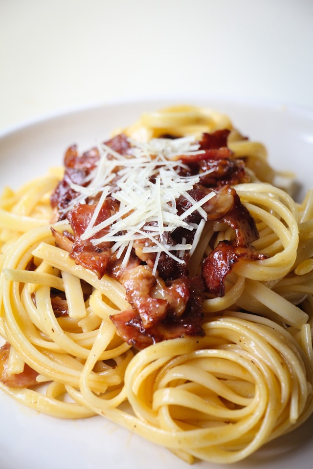

Since I was a little child I have always loved this dish. My mum used to cook it for me often in the evenings when she didn't have a lot of time, and also because I always asked her to!
This is a dish with cheese, heavy cream, and bacon. But it is so good! Silky pasta in a delicious bacony creamy sauce. And kids love it! Which is always a winner when you want to prepare something simple and fast when they're getting hungry.
Let's get ready!
For four people we need:
I usually use the one already cut in cubes, but you can use the sliced bacon too. Low a little the heat and wait until the meat becomes a bit darker.
Be careful though and don't let it burn!
If you notice it is getting too dry you can use a little bit more of cream or if you have finished it just a spoon of milk.
When it's ready just switch off the heat and put the frying pan to a side where is cold. You can decide to prepare it in advance since it doesn't matter if it becomes cold.
Put the pasta in the water and wait for the amount of minutes written on the instructions. Usually I like to use fusilli or farfalle type of pasta, but there are many people who use spaghetti or something else.
It is up to you and your preferences!
Once the pasta is ready drain it and pour it in the pan with the cream and start mixing it. If you prepared the cream in advance just put it back on the heat where you were cooking the pasta so that it can become warm again.
Now serve the pasta and put as much grated cheese as desired for each person and enjoy!
Buon appetito!